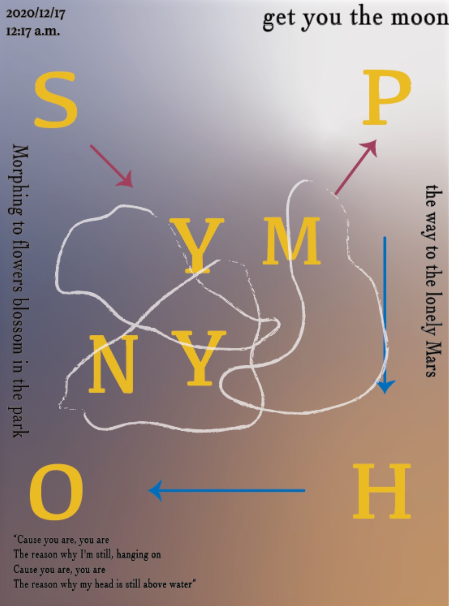
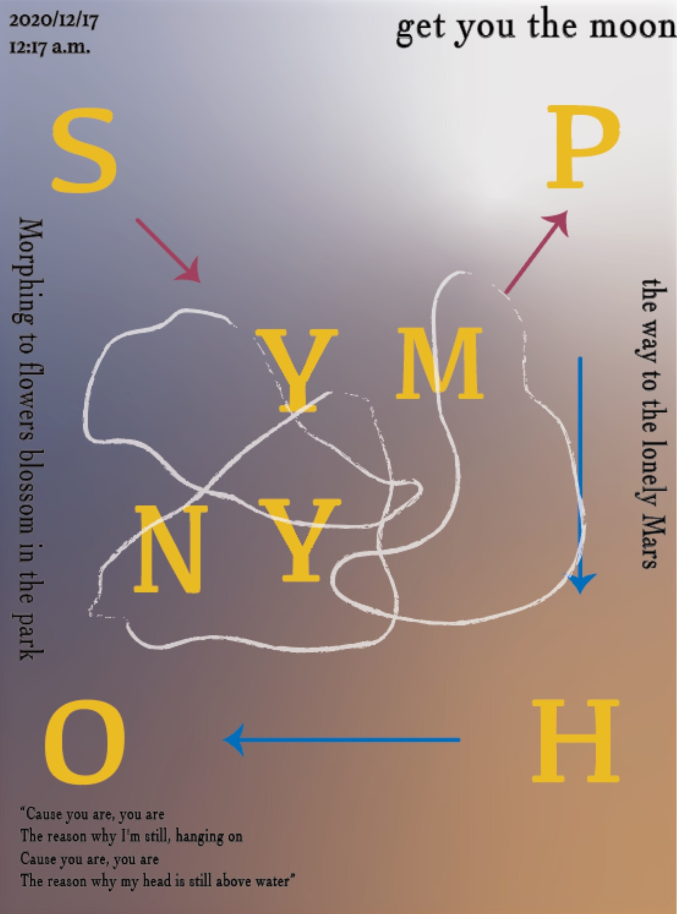

RESEARCHING THE CONNECTION OF SENSES
 

Posters of six songs. 2021.
Hearing & Vision & Emotion
Human senses are connected. Information can transmitted between hearing, vision and emotion. It can arouse people's feelings and memories. Different music has unique color and it always affects people's emotion. It means various pictures, even animation, are appeared in brain when listening to music. So that, music is not created for listening but also for watching. This is the graphic works which I designed for my friends' new album including six songs. For me, music is not only created for listening but also created for watching. So these posters were created for recording my feeling when listening for these songs. Each poster represents each song. I think it is quite meaningful theme which express the connection of five-sense and emotion.